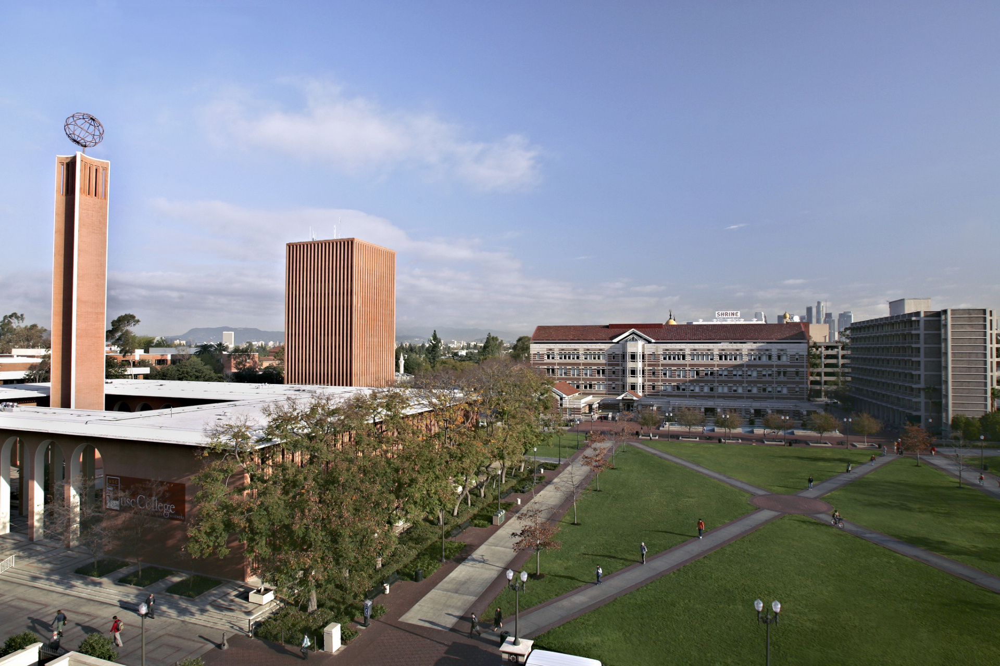
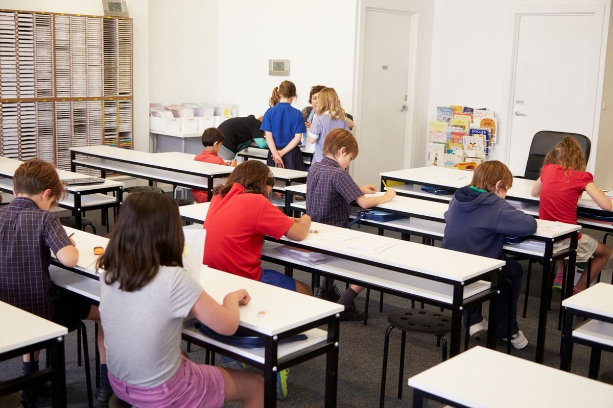
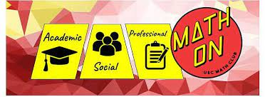
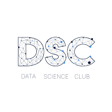
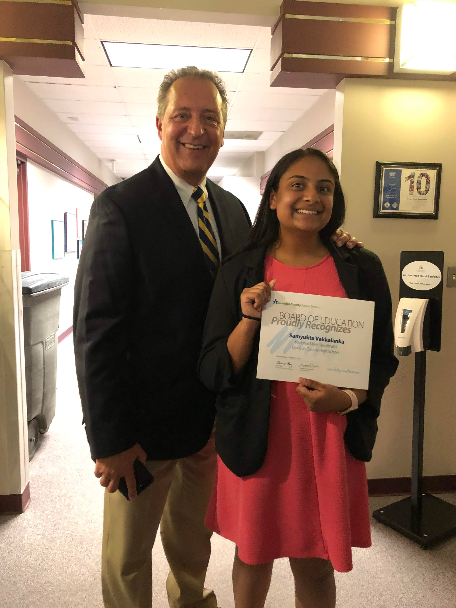

-
Skills
-
Computational Skills
- Python
- Java
- HTML/CSS
- PHP
- MATLAB
- C++
- Unix/Linux
- mySQL
- XML/XPATH
- MongoDB
- Hadoop, MapReduce
- Spark
- AWS EC2
- Docker
-
Data Analysis Tools
- ArcGIS Pro and Online
- QGIS
- Tableau, Knime, RapidMiner
- Weka, Sisense
-
Other Technical Skills
- GitHub, GitHub Pages, Gitlab
- Jira, Confluence, Agile
- Microsoft Office Suite
- Proficient in reading and writing Spanish
- Fluent in speaking Telugu
- Analytical Writing
-
-
Education
-
University of Southern California - August 2020 - May 2024
- Bachelor of Arts in Data Science
- Relevant Coursework: Programming in Python, Objected Oriented Programming in Java, Web Publishing, Introduction to Data Science, Database Management, Introduction to Programming in C++, Data Mining and Machine Learning, Sustainability and Spatial Science
- Bachelor of Arts in Applied and Computational Mathematics
- Relevant Coursework: Calculus III, Differential Equations and Linear Algebra (with programming in MatLab), Probability Theory and Statistics, Introduction to Proof-based Mathematics (with applications to many major branches in math), Discrete Methods and Algorithms
- GPA: 3.9/4.0

-
-
Professional Experience
-
Business Intelligence Intern - Comcast - June 2023 – August 2023
- Spearheaded application of machine learning techniques in Python which enabled data-driven decision-making for resource allocation and increased marketing effectiveness
- Leveraged advanced ML methodologies to perform in-depth analyses of market performance and extracted insights that unveiled the most influential features driving the penetration in specific regions
- Presented findings to management, empowering strategies for customer acquisition based on data-backed evidence
-
Cybersecurity Summer Institute Data Science Student Intern - Lawrence Livermore National Laboratory - June 2022-Present
- Developed a network analysis platform in a cloud-based environment in Python to quickly visualize over 20 hours of data
- Created and tested an algorithm in Python to isolate suspicious patterns in Industrial Control System (ICS) networks to support analysts hunting for threats in real-world critical infrastructure networks and deployed it using Docker images
- Collaborated with a team of 12 cybersecurity professionals to research and develop novel malware identification methods and communicated findings in weekly progress meetings
-
Course Producer Intro to Data Science - University of Southern California - August 2022-December 2022
- Engaged over 200 students and supplemented class material by holding weekly office hours, monitoring online discussion board for questions, and motivating students through discussions of career and future opportunities available within the program
- Evaluated student work on 4 assignments focused on data analysis methods in Python and other mining tools and 2 exams covering data science applications and provided detailed feedback in order to facilitate growth and understanding of material
-
Assistant Instructor - Kumon Center of Parker at Stonegate - July 2017-February 2022
- Teach and mentor part time for 12-15 hours/week, encourage and enable students to practice critical thinking and technical problem solving
- Assess student performance and learning style to curate customized learning plans for 25 high performing students, resulting in 100% performing at 3-4 years ahead grade level, as well as 3 students achieving program completion
- Lead day-to-day operations with a team of 4 managers, train and manage employees in student instruction to ensure productivity
- Identified a need for further skill development and help 15 middle school students navigate SAT prep

-
-
Involvement
-
USC Math Club - August 2021 - Present
- Networked with over 25 other passionate math students at weekly meetings
- Competed in intramural math competitions on teams of up to 4 and individually in tests of speed and ability to apply techniques to real-world problems
- Participated in Mentorship program as a mentee and a mentor, met with mentor every two weeks through the semester to learn about the program at USC and what a future in applied math looks like, met with mentee every two weeks to discuss the application of math to data science and explain the connections between programming and logical mathematical thinking
 -
USC Data Science Club - August 2021 - Present
- Connected with 50 other data science students in both the undergraduate and graduate data science programs at USC
- Engaged in professional and academic development lectures about topics ranging from pre-processing raw data using Sklearn to Machine Learning Models such as Classification Models
- Participated in professional exhibition talks with data scientists working in industry to learn about applications of data science and the various fields with job opportunities
 -
USC Joint Educational Program Volunteer Experience - August 2021 - December 2021
- Tutored a minority student from a local Los Angeles school in math and language arts for 1 hour a week for 12 weeks
- Benchmarked growth and progress through weekly check-ins, goal setting, and practice quizzes to curate lesson plans and in-class activities
- Collaborated with JEP mentors to develop communication between tutors, parents, and school, as well as personal reflection and feedback

-
-
Awards & Honors
- USC Dornsife Dean's List 2020, 2021, 2022
- National Merit Scholarship Finalist 2020
- USC Presidential Scholarship Recipient
- Presidential Scholar Finalist 2020
- USC Freshman Science Honors Program
- USC Thematic Option Honors Program
